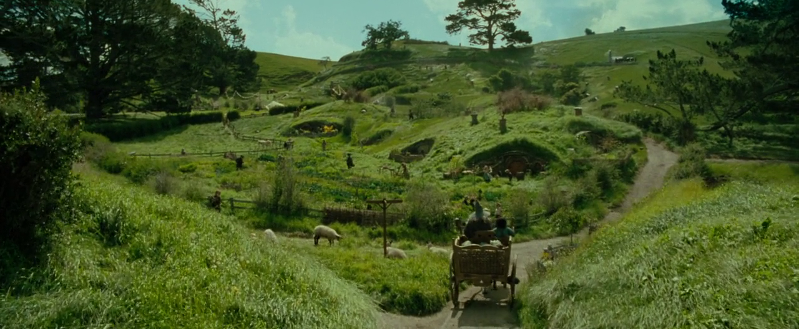

The Shire¶

This mordor environment was designed to replicate a very small network with the essential devices to colllect information from adversarial activities. This environment is a Windows environment.
Network Design¶

Endpoints To Users¶
Platform |
Version |
Purpose |
FQDN |
IP Address |
Main User |
|---|---|---|---|---|---|
Windows |
Win 2019 |
DC |
HFDC01.shire.com |
172.18.39.5 |
Administrator |
Windows |
Win 10 |
Client |
HR001.shire.com |
172.18.39.106 |
nmartha |
Windows |
Win 10 |
Client |
IT001.shire.com |
172.18.39.105 |
pgustavo |
Windows |
Win 10 |
Client |
ACCT001.shire.com |
172.18.39.100 |
lrodriguez |
Windows |
Win 2019 |
Log Collector |
WECServer.shire.com |
172.18.39.102 |
Administrator |
Windows |
Win 2019 |
File Server |
FILE001.shire.com |
172.18.39.103 |
Administrator |
Linux |
Ubuntu 18 |
Data Analysis |
HELK |
172.18.39.6 |
ubuntu |
Linux |
Ubuntu 18 |
Red Team C2 |
RTO |
172.18.39.8 |
ubuntu |
Windows Users Information¶
FirstName |
LastName |
Sam |
Department |
JobTitle |
Password |
Identity |
|---|---|---|---|---|---|---|
Norah |
Martha |
nmartha |
Human Resources |
HR Director |
S@l@m3!123 |
Users |
Pedro |
Gustavo |
pgustavo |
IT Support |
CIO |
W1n1!2019 |
Domain Admins |
Lucho |
Rodriguez |
lrodriguez |
Accounting |
VP |
T0d@y!2019 |
Users |
Sysmon |
MS |
sysmonsvc |
IT Support |
Service Account |
Buggy!1122 |
Users |
Administrator |
Administrator |
P1ls3n! |
Users |
HELK User Information¶
You can update the HELK’s password in the HELK’s paramaters file used to deploy the environment. This file is hosted by the project Blacksmith since it is the official repo for all the templates used to deploy every mordor environment.
Default Username: helk
Default Password: hunt1ng!